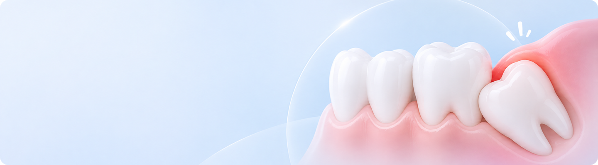
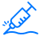
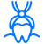

사랑니란?
사랑니는 최대 4개까지 자랄 수 있으며, 비스듬하거나 잇몸 속에 매복되기도 합니다.
충치와 염증을 유발해 주변 치아에 영향을 줄 수 있습니다.

사랑니로 인해 발생할 수 있는 통증과 염증을 치료하고,
주변 치아와 잇몸을 건강하게 보호합니다.
이런 경우 사랑니 발치를 고려할 수 있어요
-
 옆 어금니를 손상시키는 경우
옆 어금니를 손상시키는 경우
-
턱뼈안에서 낭종을 형성하는 경우
-
충치나 잇몸질환이 생긴 경우
-
기존 치열을 뒤틀리게 하는 경우
사랑니 발치과정
-
- CT 정밀 진단
- 사랑니의 위치와 신경관의
거리를 확인합니다.
-

- 스케일링
- 치석과 치태를 제거하여
구강 환경을 관리합니다.
-

- 마취 진행
- 상태와 발치 난이도에 맞춰
마취를 진행합니다.
-

- 사랑니 발치
- 위치와 형태에 따라
적절한 방법으로 발치합니다.
-
- 소독 및 실밥 제거
- 발치 부위를 소독하고,
회복 후 실밥을 제거합니다.
-
- 스케일링
- 치석과 치태를 제거하여
구강 환경을 관리합니다.
※ 치료 과정과 소요 기간은 개인의 치아 상태에 따라 달라질 수 있습니다.